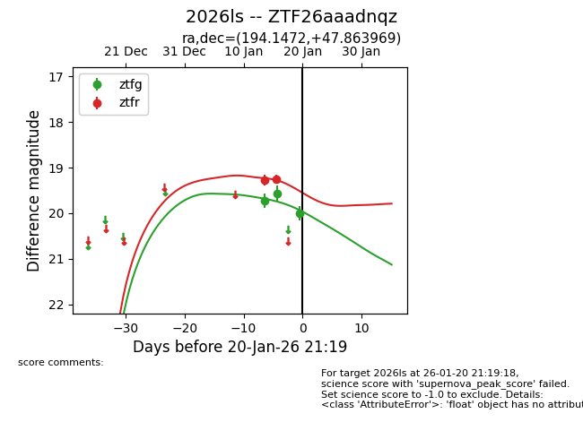
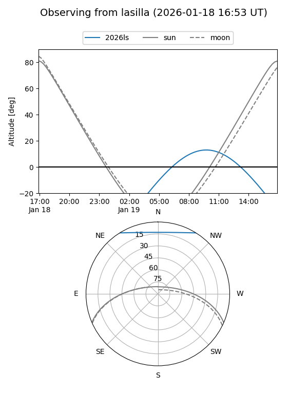
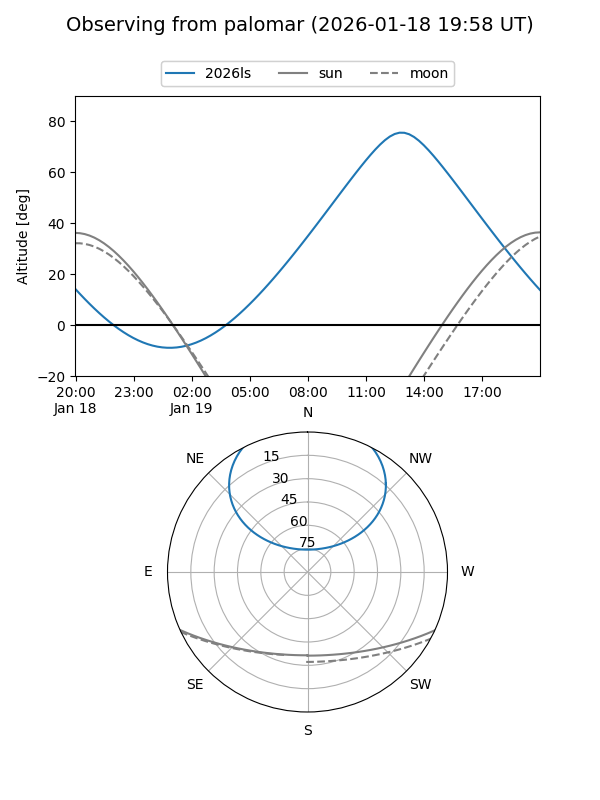
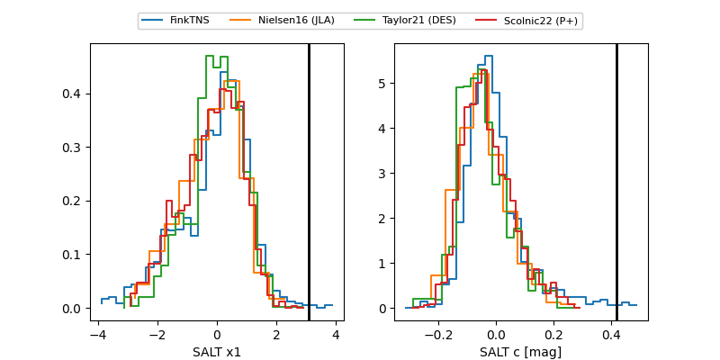

2026ls
Target 2026ls at 2026-01-16 14:25
Aliases and brokers:
FINK: link
Lasair: link
ALeRCE: link
TNS: link
YSE: link
alt names
ZTF26aaadnqz (ztf,fink_ztf)
2026ls (tns,yse)
Coordinates:
equatorial (ra, dec) = 194.1472,+47.86397
equatorial (HMS+DMS) = 12:56:35.33,+47:51:50.29
galactic (l, b) = (120.4941,+69.23989)
Flags:
Photometry:
last ztfg=19.56, ztfr=19.27
2 ztfg, 1 ztfr detections
Lightcurve

Visibility


Additional plots
